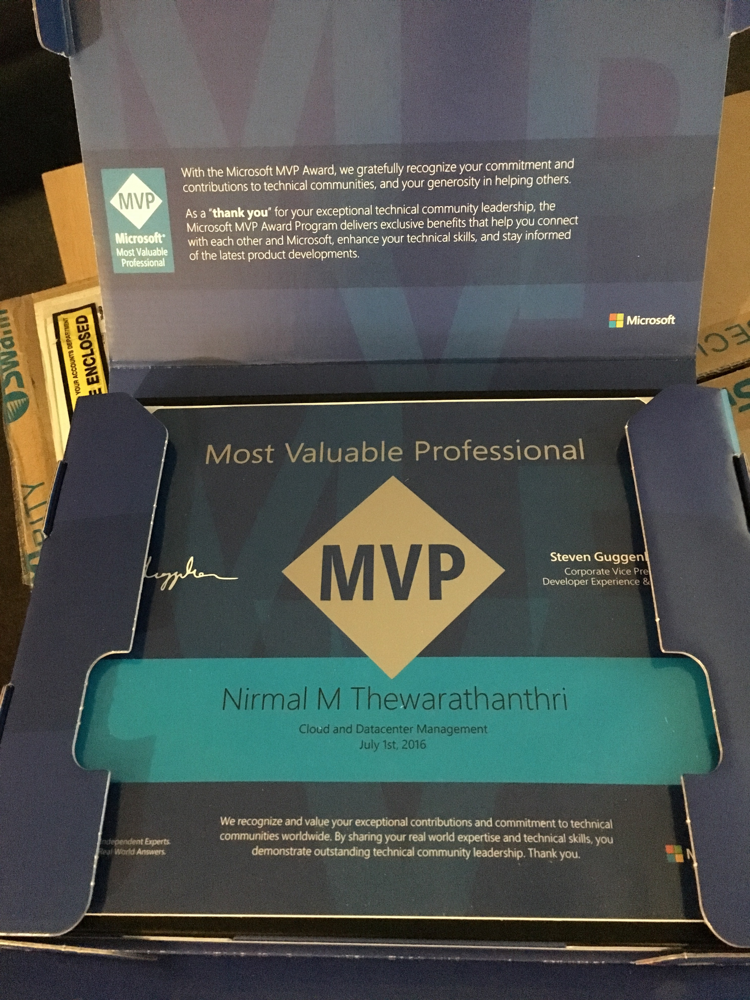

Awarded as a Microsoft MVP for 6th consecutive year
2nd July I was re-awarded as a Microsoft MVP for 6th consecutive year. Over the years, it has been a great privilege being part of this Microsoft MVP community, to be able to share and also learn from others.
This year, I’m part of the Cloud & Datacenter Management award category due to some of the recent changes in the MVP Program. Previously I was awarded for High Availability award category for my contributions relating to Windows Server / SQL Server High Availability and since OCT 2015, Microsoft made changes to bring Windows Server / System Center award categories together under Cloud & Datacenter Management. This gives us greater flexibility to be able to contribute in other areas such as System Center and also get credited towards the Microsoft MVP Award.
Looking forward to another year within the MVP Program and mostly looking forward to meeting all of my MVP friends and the product team later during the year at the MVP Global Summit, which is held annually at the Microsoft Campus in Redmond.
